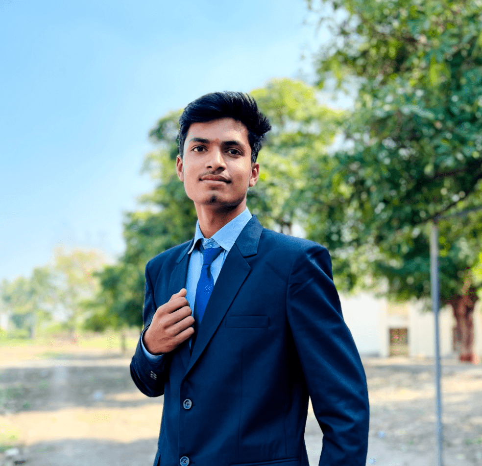

|
 |
Welcome to my portfolio! I am currently a third-year Computer Engineering student at Pravara Rural College of Engineering, Loni, Rahata, affiliated with Savitribai Phule Pune University. With a strong foundation in computer engineering principles and hands-on experience in web development, I am passionate about creating seamless and engaging digital experiences. My journey in web development began early in my academic career, and I have continuously honed my skills through various projects and internships. My expertise includes front-end development, with a focus on HTML, CSS, and JavaScript, complemented by a growing proficiency in back-end technologies. I am driven by a desire to innovate and am committed to staying abreast of the latest industry trends and technologies. My ultimate goal is to carve out a successful career in web development, where I can leverage my technical skills and creativity to build robust and user-friendly web applications. Thank you for visiting, and I look forward to connecting with like-minded professionals and exploring new opportunities in the ever-evolving world of web development.